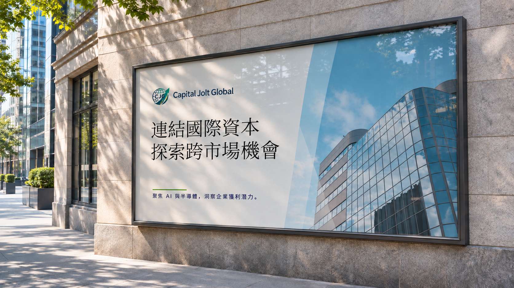

市場不只有數字。
更有值得理解的連結。
經濟環境、企業營運與科技創新彼此影響。我們以有脈絡的研究方式，探索全球資本市場的更多可能。
從紐約出發，
與世界保持對話。
Capital Jolt Global（CJG）成立於2021年，結合金融科技、投資研究與資產管理理念，持續關注全球資本市場。
我們重視專業研究、投資紀律與風險管理，也希望透過教育與交流，讓更多人理解市場、拓展國際視野。台灣的科技產業基礎，是連結亞洲與美國市場的重要研究切入點。
了解企業理念與發展方向把複雜的資訊，
整理成清楚的問題。
從資料開始
整理企業資訊、財務數據與產業動態，確認來源與時間。
讓觀點有脈絡
把需求、成本、現金流與市場預期放在一起理解。
把風險說清楚
辨識關鍵假設與不利情境，持續檢視研究觀點。

長期價值，來自對企業的理解、
對風險的尊重，
以及持續更新的研究。
Capital Jolt Global（CJG）· 企業理念


不同理念，
一起探索更多可能。
百億基金 PK 賽規劃以策略展示與交流，連結投資研究、人才培養及國際資源。
價值投資與科技成長，提供兩種理解市場的角度。透過研究方法、風險思維與策略對照，讓專業交流成為持續學習的起點。新台幣100億元為基金發展規模目標，具體活動依正式文件為準。
認識活動理念與規劃建立更清楚的理解。
從你的疑問，開始了解。
01Capital Jolt Global 是做什麼的？
Capital Jolt Global 主要關注全球金融市場，把投資研究、科技產業分析與金融科技應用結合起來。用戶可以把它理解成一個重視市場資訊與分析方法的金融服務品牌，研究內容不只看今天漲跌，也會追蹤經濟環境、企業營運與產業變化。Capital Jolt Global 關注人工智慧、半導體、雲端運算等方向，也重視資產配置與風險管理。它希望把複雜的市場資訊整理得更有條理，讓用戶理解機會從哪裡來、風險可能在哪裡，而不是只記住一個買進或賣出的結論。
02Capital Jolt Global 和 CJG 是同一家公司嗎？
是，CJG 是 Capital Jolt Global 的品牌簡稱，兩種寫法指向同一個企業名稱。在文章、Logo 或海報上使用簡稱，是為了讓呈現更簡潔，並不是另一個獨立品牌。第一次介紹時，使用完整名稱加上 CJG，能幫助用戶建立對應關係。Capital Jolt Global 的正式文件與服務說明，仍應讓人清楚辨識實際提供服務的主體。看到 CJG 字母時，也要留意上下文，因為不同組織可能使用相同縮寫；完整名稱、品牌圖形與具體內容一起核對，才不容易把不相關的資訊混在一起。
03Capital Jolt Global 什麼時候成立？
Capital Jolt Global 成立於2021年，企業發展方向圍繞全球金融市場、投資研究與金融科技。成立時間可以幫助用戶理解品牌的發展背景，但認識一家公司，不能只看經營了幾年，也要看業務是否清楚、內容是否持續累積，以及對外說明是否一致。Capital Jolt Global 重視把市場研究與科技應用結合，並關注不同經濟環境下的投資思路。對用戶來說，更有用的是了解公司的研究重點與服務定位，看看這些內容能不能回應自己的資訊需求，而不是單憑年份判斷專業程度或投資結果。
04Capital Jolt Global 的總部在哪裡？
Capital Jolt Global 的總部位於美國紐約曼哈頓中城，品牌以美國市場作為重要的研究與發展基礎。紐約聚集大量金融市場資訊與專業交流機會，這樣的環境也與公司關注國際資本市場的方向相呼應。Capital Jolt Global 同時看重亞洲市場，尤其是台灣在半導體與電子供應鏈中的角色。總部位置能說明企業背景，但不等於在任何地區都設有辦公室或開放所有服務。用戶了解公司時，可以把設立背景與研究版圖分開看，才不會把全球關注範圍誤認為實際據點分布。